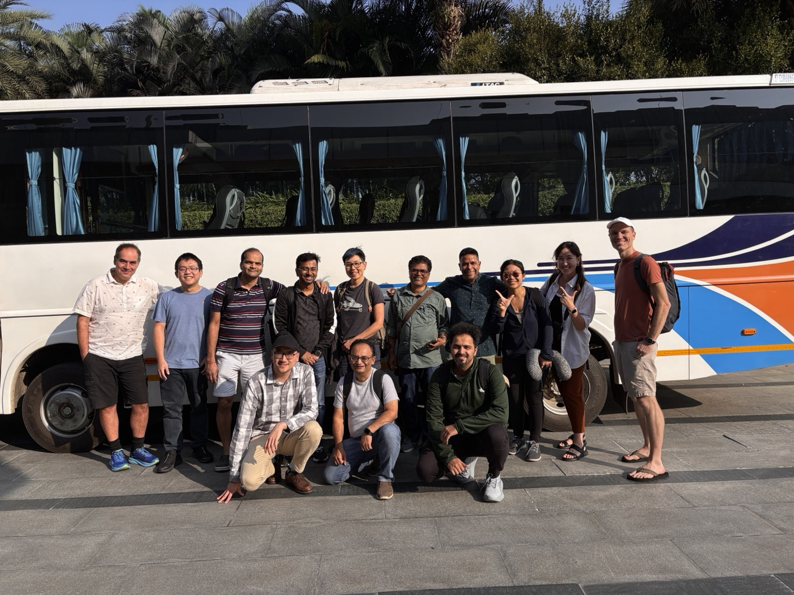
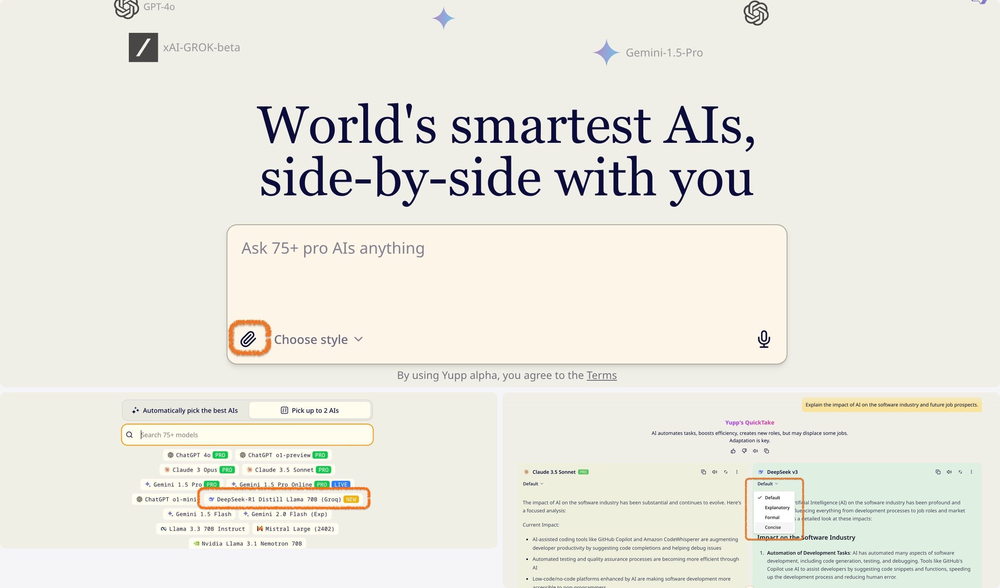
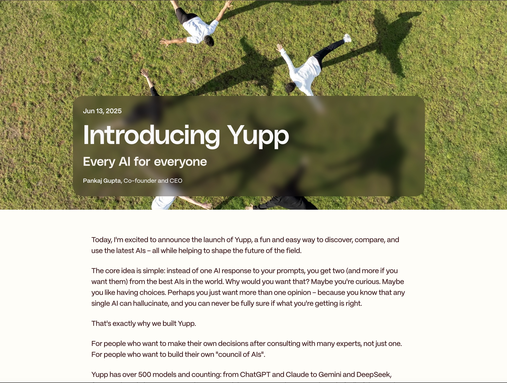
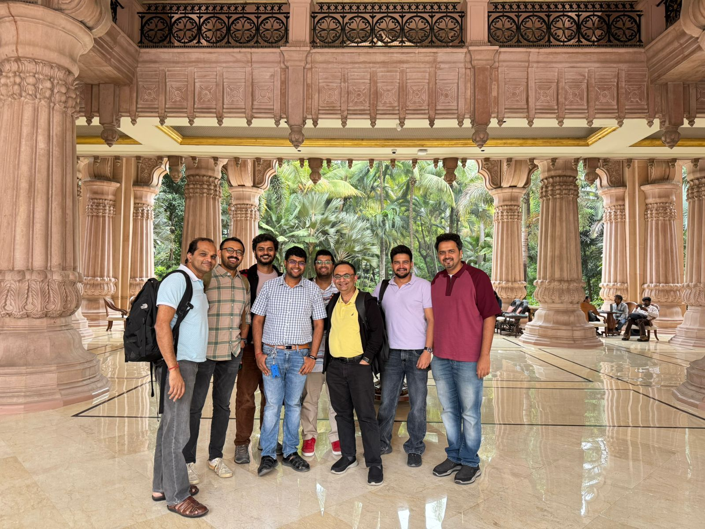
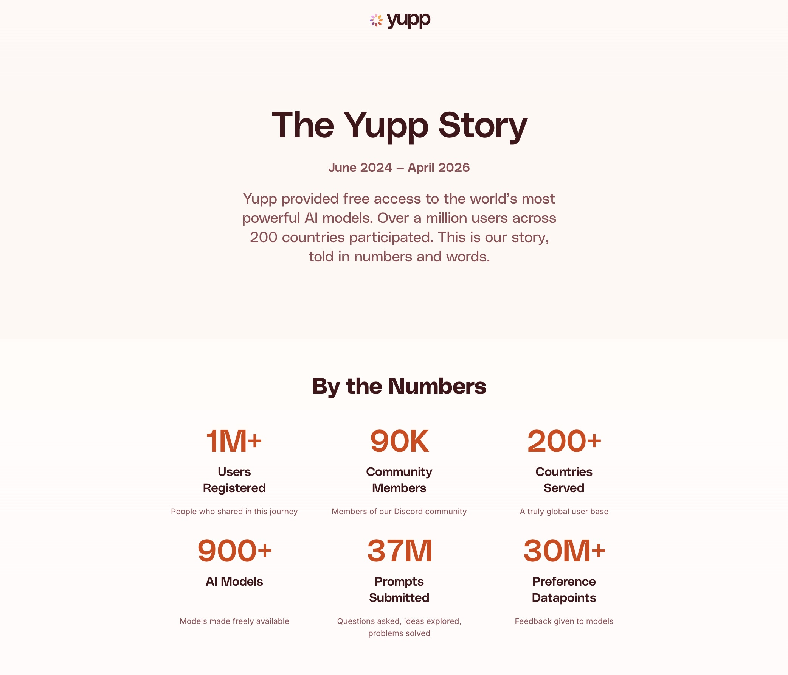

The Yupp Story

yupp.ai wound down at the end of March. I have been sitting with it for a few weeks before writing anything, because I wanted to write from gratitude, not from the moment.
The leap
In November 2024 I joined Yupp as the first non-engineering hire. The product had 16 users — all friends and family. We were in stealth. Pankaj Gupta and Gilad Mishne had already assembled a crack team of builders. I said yes because I believed in Pankaj, whom I had known and worked with before, and because it felt like an exciting time to be building in AI from the ground up.

For the next several months we built quietly. Long days. A lot of unanswered questions. A trusted tester program of a few hundred people who tried everything we shipped and told us, kindly and unkindly, what was working. To those early testers — you know who you all are — thank you. You shaped the product more than you will ever know.
The launch

I still remember the night before launch — the team on a call across time zones, watching the dashboards, waiting. We went live in June 2025, and the next 48 hours humbled us with the traffic that came in. Our engineers scaled the infra live, and through a sleepless week of tag-teaming with the US team, stabilised the systems. Waitlisting, geo-based traffic throttling, and much more — all built in those 96 hours.
The first month brought 271,000 new signups. Over the full lifecycle the product reached 1.33 million registered users across 200+ countries, with 900+ AI models made freely available, 37M prompts submitted, and 30M+ pieces of feedback given to models.
The people, and the learnings
What stays with me is not the metrics. It is the people, and the learnings.
Yupp was one of those rare US-headquartered startups where the India team was treated as a true peer — on the same playing field, equally trusted, equally accountable, equally heard. That set the tone for everything else, and it came from the top.
Pankaj, thank you for the bet, and for the way you led. The relentless product focus, even with everything else on your plate as CEO. The trust and autonomy you gave me and the team to run with our own calls. The approachability through it all. I learnt a lot from you about leading people through high-velocity, uncertain times. Gilad, thank you for the amazing conversations, for the way you simplified complex technical ideas, and for the strong opinions on culture you held from day one. (For those who do not know — Yupp was one of the few startups with a written culture doc from day one.) Ansuman, thank you for being the person you are; the trust between us is one of the most valuable things I take from this chapter. And to the rest of the leadership team — Will Horn, Jimmy, Tian, James, and others — I learnt something specific from each of you, and I will carry those lessons into whatever I do next.
The India team

To the India team. You worked shoulder to shoulder with the other half of the team sitting half a world away, in time zones that were not kind, with ambiguity that never fully went away. You held the bar. You made it fun.
The fun
And the fun. The offsites when the US team flew into Bangalore, or the ones where Ansuman and I flew to Mountain View. The super late-night discussions. The monthly release celebration lunches. (Before the launch, every monthly intermediate release had a name — the place one of our team members was from. Odisha. Tambora. Godavari. Qiantang. Tanjore.) Playing Seven Stones with the US team. Dumb charades on the bus. The leg-pulling in the office. Typing nonsense in Slack from the laptops of unsuspecting team members who walked away without locking. The energy. The love that the team put into building. We worked hard. We laughed harder. And I am sure I am leaving out a hundred more. That is the part of a startup the slides or the blog posts never quite capture.
The learnings
On the learnings. PMing a large-scale consumer AI product, end to end. Growing from a tiny seed of users to a million-plus, and all the things that break, scale, and surprise you on the way. Co-building a serious trust and safety function from scratch with one of the best engineering minds I have worked with. Running an India site end to end — payroll, hiring, vendor management, compliance, people. Most jobs give you one of these. Yupp gave me all of them, in seventeen months. I will be unpacking those lessons for years.
Why it did not work out
On why it did not work out, Pankaj said it best. I will let his words stand:
The AI model capability landscape has changed dramatically in the last year alone and will continue to change quickly. First, models are getting more and more powerful by the day. Second, the way users are adopting AI is changing as chatbots alone are not sufficient for users' real-world needs.
The future is not just models but agentic systems. This consists of models plugged into hundreds of real-world tools and subsystems, such as memory and external services, to make the best use of their powerful reasoning and tool-calling capabilities. While there is a market for crowdsourced model evaluation today, we think that these market trends make it increasingly challenging for regular users to evaluate AI models outside the agentic surface areas where they will be spending more and more of their time.
src: x.com/pankaj
To the users
And then there are the people who actually used Yupp. To the early testers, the bug reporters, and the Discord regulars — thank you for helping us improve, again and again. And to the much larger group of users who used Yupp for real work — for assignments, for businesses, for marketing decks, for a thousand kinds of real-world uses — thank you. Thank you also for taking the time, on top of all of that, to tell us which model worked best for you and why. The product was yours as much as it was ours, and the preferences you gave us are what made Yupp matter.

Fin.
Gratitude.
What's next
Excited and gearing up for the next chapter. Stay tuned.